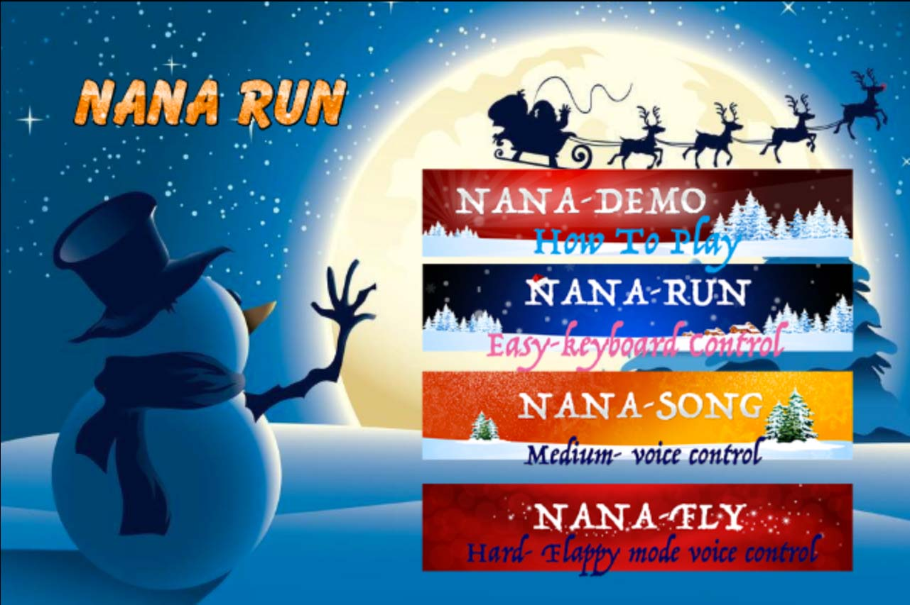
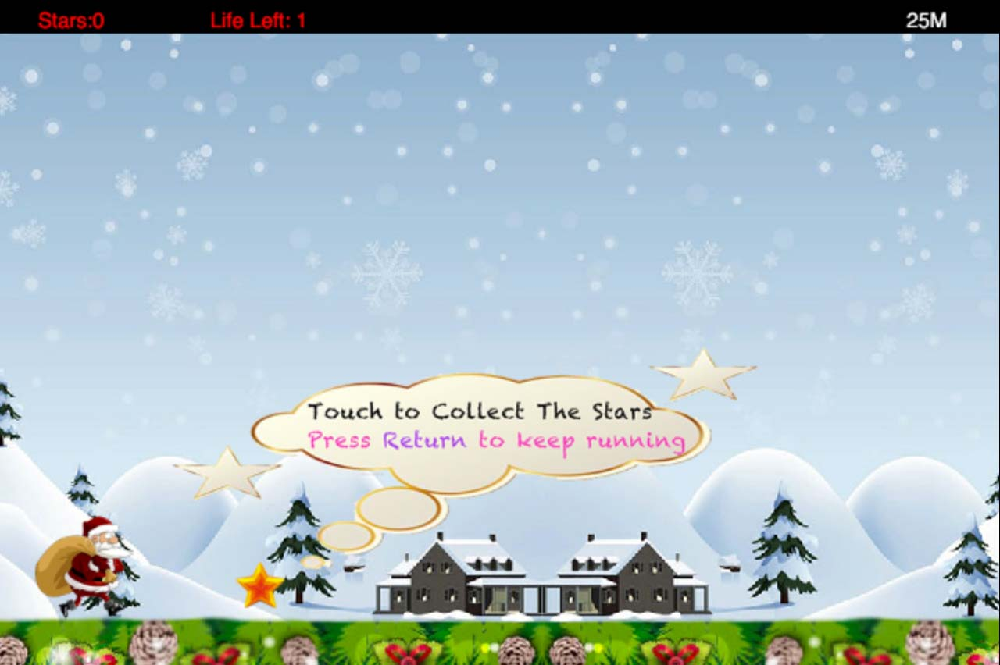
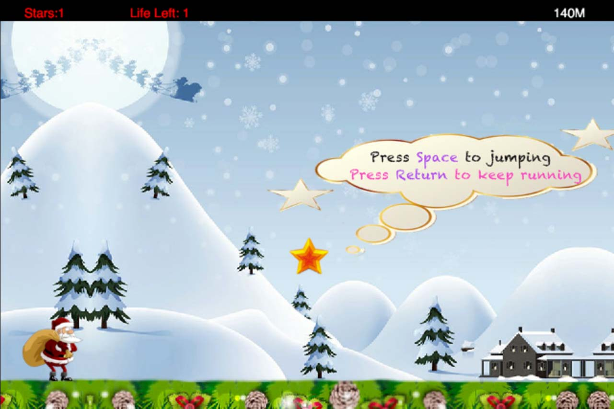
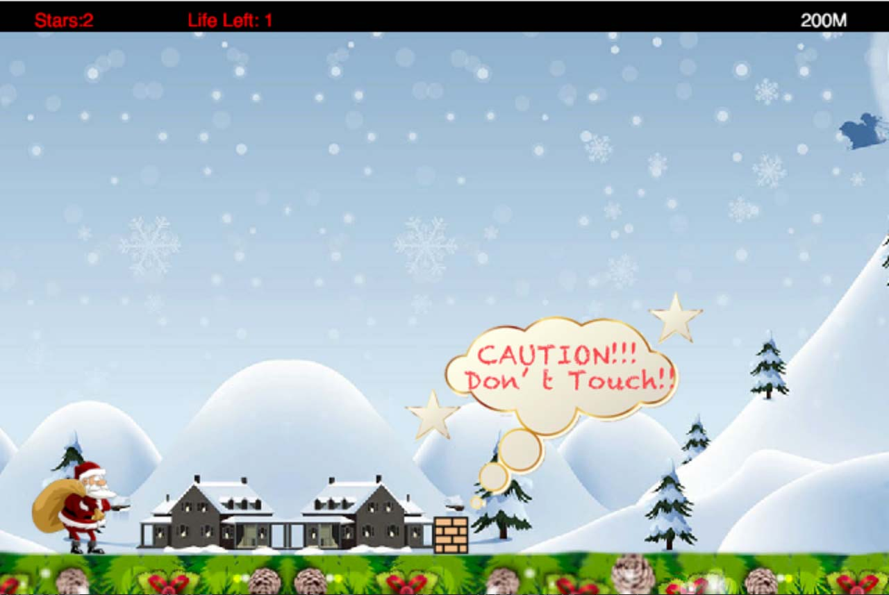
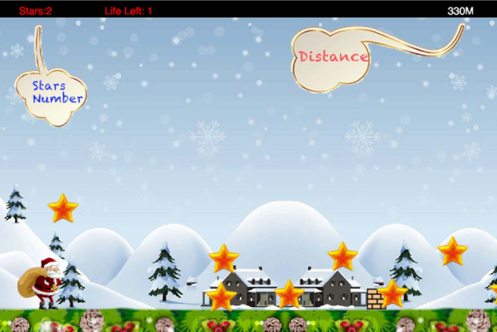

built by Cocos2d engine.
Instructions
The menu is the first screen displayed to you when user starts the game. You may select the mode he/she intends to play on this screen, and there are four buttons there to enter each level. After you choose a specific level to enter, you will go to that level.
Now you have entered the Nana-Demo(how to play) mode. In this mode you can learn how to controll Nana. This first messager shows you how to collect the stars.
The upcoming messager show you “JUMP == SPACE”, now you can jump to touch the stars in midair.
This messger shows, you need to avoid the rock.
The Stars number and Distance number are easy found on the screen.
When you finished the Nana Demo mode, you can go back to the menu and play in a few levels with different difficulty, or replay this level to learn how to play this game again. This level will stop automatically.
Nana-Run(Easy-keyboard control) level is a basic level for new players, be careful for the accelaration after long time running.
Of course you can replay or go back to menu after Nana dies in each level.
You will have 3 lives in each level. It's much more easy to loss Nana's life if your are a new player in Nana-Song (medium - voice control) level. You need to flight aloud to energize our Nana. Each time you touch a rock, you will loss your life. 2 rocks == 2 life, 3 rocks == 3 life, .............
We said proudly: We have a Flappy Nana. In this level Nana could jump continuously. Fly and avoid the rocks, Nana!
"None None" Team
Game Video
Download
If you want to download the source code, you can download here.
Note: If you have the Cocos-JS Software, you can click NanaruN.ccs, then compile and run this game. All Source Code in Src file.
You can also open publish/html5 file. Use the package index.html to run this game driectly. Since we add the voice control model, it required a local host to run the last two levels.